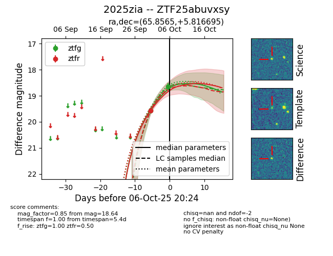
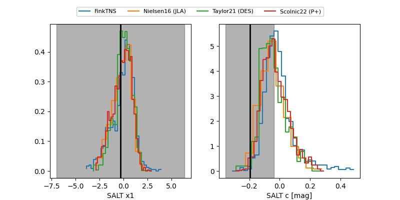

FINK: ZTF25abuvxsy
Lasair: ZTF25abuvxsy
ALeRCE: ZTF25abuvxsy
TNS: 2025zia
YSE: 2025zia
ZTF25abuvxsy (ztf,fink)
2025zia (tns,yse)
equatorial (ra, dec) = (65.8565,+5.81669)
galactic (l, b) = (188.3633,-29.12229)


last ztfg=18.64, ztfr=19.57
2 ztfg, 1 ztfr detections